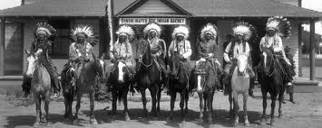
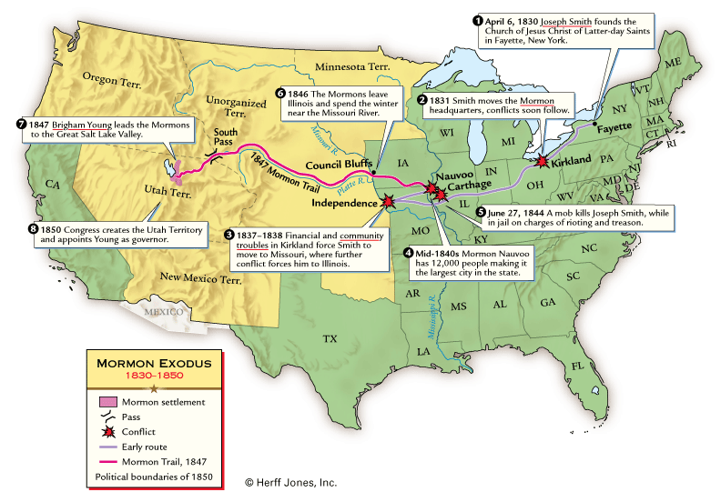
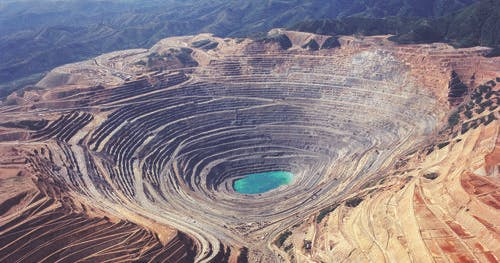

Utah History
Native Americans
Evidence has shown that people have been drawn to areas in Utah as long as 10,000 years ago, specifically in the Escalante Valley in Southern Utah as well as in the Great Basin, near the Utah/Nevada border. Today they are divided into five main groups: Utes, Goshutes, Paiutes, Shoshone, and Navajo. Each occupies a different region within the state, many of which regions extend across borders into other states
Mormon Migration
The Mormon pioneers were members of The Church of Jesus Christ of Latter-day Saints (LDS Church), also known as Latter-day Saints, who migrated in the mid-1840s across the United States from the Midwest to the Salt Lake Valley in what is today the U.S. state of Utah. The journey was taken by about 70,000 people beginning with advance parties sent out by church leaders in March 1846 after the 1844 death of the church's leader Joseph Smith made it clear that the group could not remain in Nauvoo, Illinois. The well-organized wagon train migration began in earnest in April 1847, and the period, known as the Mormon Exodus is, by convention among social scientists, traditionally assumed to have ended with the completion of the First Transcontinental Railroad in 1869. Not everyone could afford to transport a family by railroad, and the transcontinental railroad network only serviced limited main routes, so wagon train migrations to the far west continued sporadically until the 20th century.
Mining
Mining for metals, coal, hydrocarbons, and minerals was a vital aspect of Utah's economic, industrial, political, and social growth and development. The mining industry has touched all aspects of life in Utah and has contributed greatly to the state's history. Discoveries soon followed in Tooele County and in Little Cottonwood Canyon (1864). With the development of the transcontinental railroad in 1869 came the transportation network necessary to elevate Utah's mining efforts from small-scale activity to larger commercial enterprises. Other early mining areas included the Big Cottonwood, Park City, and Tintic districts, along with the West Mountain District, which encompassed the entire Oquirrh mountain range. Mining activity in these regions grew through the 1880s. Of all the minerals and rocks mined in Utah, the state is best known for its copper mining.
Olympics
The 2002 Winter Olympics, officially the XIX Olympic Winter Games and commonly known as Salt Lake 2002, was a winter multi-sport event that was celebrated from 8 to 24 February 2002 in and around Salt Lake City, Utah, United States. 2,399 athletes from 78 nations participated in 78 events in fifteen disciplines, held throughout 165 sporting sessions.The 2002 Winter Olympics and the 2002 Paralympic Games were both organized by the Salt Lake Organizing Committee (SLOC), the first time in Olympic and Paralympic history that both events were organized by a single committee. Utah became the fifth state in the United States to host the Olympic Games, after Missouri, New York, California, and Georgia. The 2002 Winter Olympics were the last Olympics to be held in the United States until the 2028 Summer Olympics in Los Angeles.